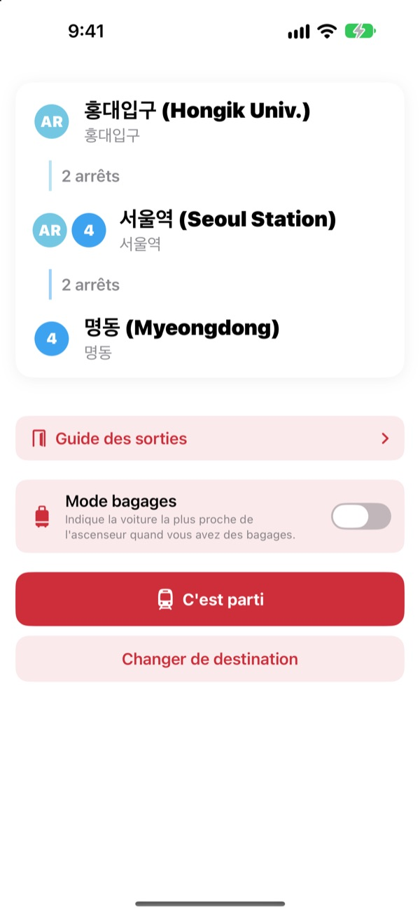
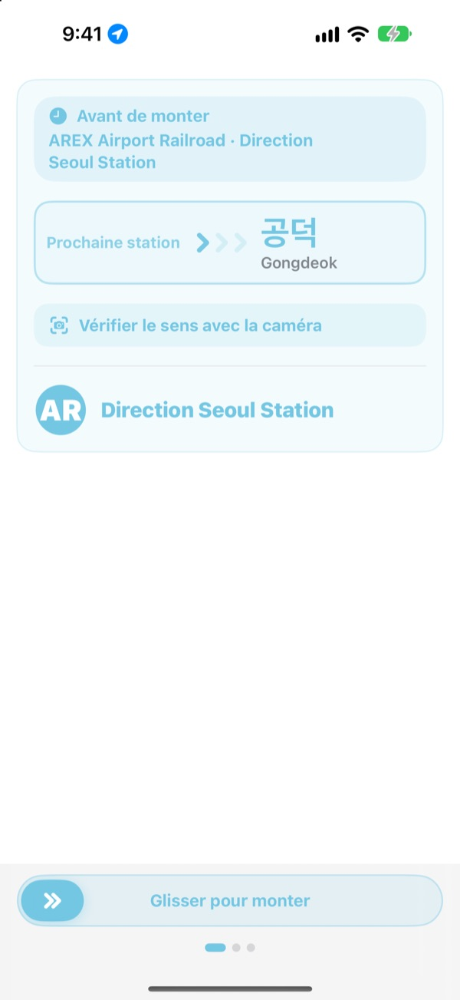
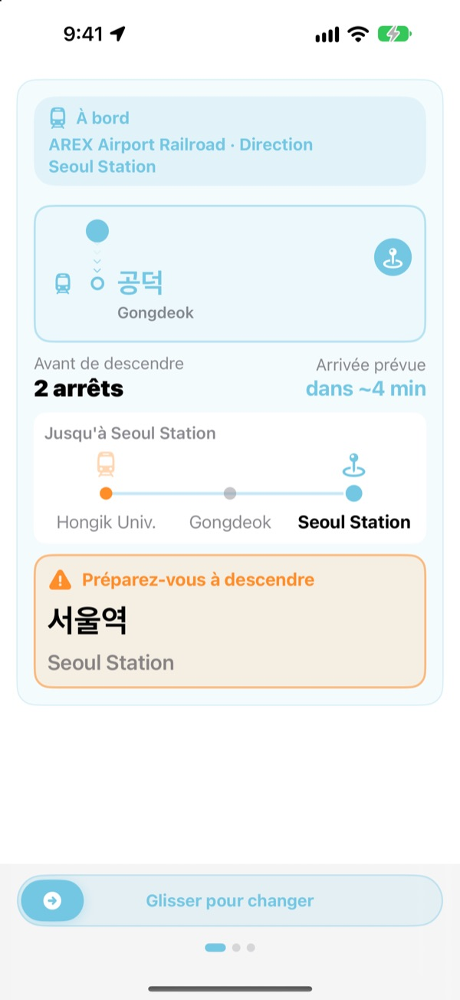
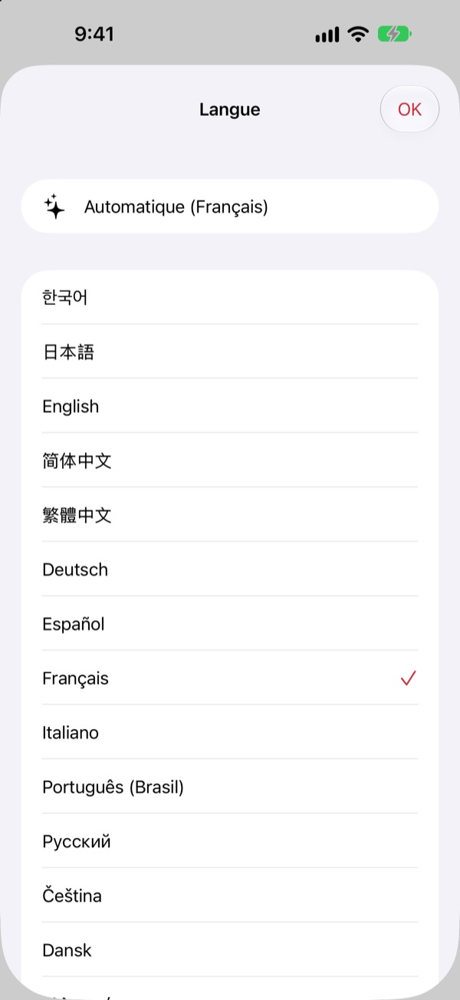

Le bon quai.
Le bon arrêt.
Choisissez le départ et l’arrivée, et KORA vous indique quel train prendre, écrit exactement comme sur le panneau du quai. Pendant le trajet, il suit votre station et vous prévient quand descendre.
La recherche d’itinéraire, le sens du train et les arrivées en temps réel sont gratuits.

Faites un essai
Vous êtes à Hongik Univ., sur la ligne AREX. Choisissez où descendre et touchez « C'est parti » pour voir le sens du train et les alertes de descente, comme dans l’app.
Déjà resté sur le quai sans savoir quel train prendre ?
Les apps de cartes vous donnent la ligne, mais sur le quai il n’y a que des panneaux avec des noms de stations inconnus. Montez dans le mauvais sens et il faut revenir de plusieurs arrêts. Ratez l’annonce et vous dépassez votre station. KORA désigne votre train comme le panneau et vous prévient avant votre arrêt.
Les mots du panneau
Le train à prendre s’affiche exactement comme sa destination sur le quai et sur le train. Un doute ? Pointez la caméra vers le panneau du quai ou l’affichage de destination du train, et KORA vous dit tout de suite si c’est le bon sens.
La reconnaissance du texte se fait entièrement sur votre iPhone.

Plus d’arrêt manqué
KORA combine les arrivées en temps réel, le GPS, les départs et arrêts du train et les annonces à bord pour savoir où vous êtes. À l’approche de votre arrêt, vous recevez « Préparez-vous à descendre », puis « Descendez maintenant ! », avec une vibration.
La progression s’affiche aussi sur l’écran verrouillé et dans la Dynamic Island.

23 langues, noms coréens conservés
Toute l’app existe en 23 langues et démarre dans celle de votre iPhone. Les noms de stations s’affichent en coréen à côté de la transcription latine des panneaux, pour les repérer facilement sur le quai.

Trois étapes pour commencer
- 1
Fixez le départ
Le GPS trouve la station la plus proche, ou choisissez-la.
- 2
Choisissez l’arrivée
Correspondances, arrêts et train à prendre s’affichent aussitôt.
- 3
Touchez « C'est parti »
L’écran et une vibration vous disent quand descendre.
À quoi servent les autorisations
- Position
- Trouver la station la plus proche
- Caméra
- Lire les panneaux du quai et les affichages de destination pour vérifier le sens
- Micro et reconnaissance vocale
- Comprendre dans les annonces le nom de la station et le côté des portes
- Mouvements et forme
- Détecter départs et arrêts pour une station actuelle plus juste
Toutes les autorisations sont facultatives. Sans elles, vous choisissez les stations vous-même et gardez l’itinéraire et les alertes de descente. Position, caméra et annonces sont traitées sur votre appareil et jamais enregistrées, conservées ni envoyées.
L’itinéraire est toujours gratuit. Le guidage à bord, c’est KORA Pro.
Gratuit
- Recherche d’itinéraire et correspondances
- Le panneau de destination du train à prendre
- Arrivées en temps réel
- Vérification du sens avec la caméra
- Station actuelle et alerte de descente à l’écran
- Toutes les fonctions Pro sur vos trois premiers trajets
KORA Pro
- Sur chaque trajet : guidage sur l’écran verrouillé, reconnaissance des annonces et vibration à la descente
- Guide des sorties : ce qu’il y a à chaque sortie des lignes 1 à 8 de Séoul
- Alerte dernier train sur les lignes 1 à 9
- Mode bagages : la voiture la plus proche de l’ascenseur sur les lignes 1 à 8
Un seul achat, gardé pour toujours. Pas d’abonnement.
Une fois les trajets gratuits utilisés, vous pouvez toujours voyager. La progression à l’écran reste ; seuls l’écran verrouillé, la reconnaissance des annonces et la vibration se mettent en pause.
Questions fréquentes
L’app ne trouve pas ma station ou en affiche une autre.
Allez dans Réglages > Confidentialité et sécurité > Service de localisation > KORA, choisissez « Lorsque l’app est active » et activez « Position exacte ». Sous terre ou dans un grand bâtiment, le GPS peut se tromper : touchez la carte de la station actuelle en haut et choisissez-la vous-même. Tout fonctionne aussi sans accès à la position.
Comment fonctionne la vérification à la caméra ?
Une fois l’itinéraire affiché, ouvrez la vérification à la caméra et cadrez le panneau du quai ou l’affichage de destination du train. Le texte coréen donne le meilleur résultat. Si le panneau est sombre, loin ou très en biais, rapprochez-vous et visez de face. Le résultat est une aide : en cas de doute, regardez aussi les panneaux de la station.
Les arrivées en temps réel ne s’affichent pas.
Elles proviennent du Seoul Open Data Plaza, demandent une connexion et concernent surtout les lignes de l’agglomération de Séoul. Hors ligne ou sans données en temps réel, KORA passe automatiquement à une estimation fondée sur les horaires, le GPS et l’accéléromètre, et continue de vous guider. La recherche d’itinéraire marche hors ligne.
L’alerte de descente arrive un peu tôt ou un peu tard.
Sous terre, le GPS est faible et l’estimation de la station peut prendre du retard. Si vous autorisez le micro, KORA corrige la position grâce aux annonces à bord. Les alertes sont une aide : écoutez aussi les annonces et regardez les panneaux.
Comment changer de langue ?
KORA démarre dans la langue de votre iPhone. Touchez longuement une carte de station sur l’écran principal (station actuelle ou arrivée) pour ouvrir le choix de la langue parmi 23.
L’activité en direct n’apparaît pas sur l’écran verrouillé.
Vérifiez que les Activités en direct sont activées dans Réglages > Apps > KORA (sur un iOS plus ancien, Réglages > KORA). Elle apparaît quand vous lancez le guidage et se termine si vous fermez complètement l’app. La Dynamic Island n’existe que sur les modèles d’iPhone qui en sont équipés.
Quelles villes sont couvertes ?
Environ 930 stations dans l’agglomération de Séoul (Séoul, Gyeonggi et Incheon, y compris GTX-A, AREX, la ligne Shinbundang et les métros légers), à Busan, Daegu, Gwangju et Daejeon. Changez de ville avec les étiquettes de région en haut du choix de station.
Puis-je l’essayer avant le voyage ?
Oui. Choisissez vous-même le départ et l’arrivée pour voir itinéraires, correspondances et sens du train depuis n’importe où dans le monde.
KORA Pro est-il un abonnement ?
Non. C’est un achat unique que vous gardez, compatible avec le partage familial. Après une réinstallation, touchez Restaurer l’achat sur l’écran Pro.
Que deviennent mes données ?
Ni compte ni publicité. La position, la caméra et la reconnaissance des annonces sont traitées sur votre appareil et ne sont jamais conservées ni envoyées. Nous collectons seulement des statistiques d’utilisation anonymes pour améliorer l’app.
L’app est-elle accessible ?
KORA prend en charge VoiceOver et les grandes tailles de texte. Vos suggestions pour l’améliorer sont toujours les bienvenues.
Station manquante, nom étrange ou autre question ? Écrivez à mizzking75@gmail.com. Indiquez la version de l’app, votre modèle d’iPhone et les stations utilisées pour une réponse plus rapide.